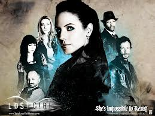

The Popularity of Sci-Fi Shows
Sci-Fi shows have become immensely popular in the past decade because I started watching them. This insanely strange phenomenom has baffled scientists and entertainment professionals alike.
| The Best | Also Great |
|---|---|
Firefly |
Warehouse 13 |
Doctor Who |

Lost Girl |
Stargate SG-1 |
Eureka |
| Really The Best | Really Also Great |
When coding you may sometimes need to declare a variable such as var shown = false.
You can't take the sky from me
- Firefly
Doctor Who is a British TV show about a time traveling alien that goes by the name of the Doctor.
For more complete list of fun sci-fi shows visit Wikipedia's List of Sci Fi TV Shows.
Sci-Fi shows have become immensely popular in the past decade because I started watching them. This insanely strange phenomenom has baffled scientists and entertainment professionals alike.
Sci Fi to Syfy: Syfy Has Its Best Year Ever by Screen Rant.
When Dave Howe stepped up to the plate at Sci Fi, took the reigns of the network and started heading them towards their new future, he wanted to expand on the number of markets the network was in, which included the youth market (demographic). Howe was also concerned with replacing their flagship television series, Battlestar Galactica & expanding on Ghost Hunters.
British Shows Remade in US
How do I love thee sci-fi shows? let me share the ways... more than any boy that I know more than the white and fluffy snow.